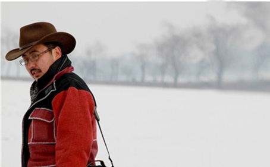

达哇才让 时代之声传藏胞
来源：中华儿女报刊社

他是工作了18年的“老翻译”，为填补汉藏翻译的规范统一积极奔走；他为找到某个句子的最佳译句凝神聚气、挑灯夜战；他努力践行理论与实践相结合，坚持在翻译之余进行学术研究。他，就是中国民族语文翻译局藏文室主任、中国民族语文翻译局导师、中国翻译协会会员、《民族文学》首批特约审读员达哇才让。
记者在翻译局见到了这位为人随和、谈笑风生的资深藏族翻译者，一件合身的格子衬衫，下摆塞在牛仔裤中，显得干练而随意；卷曲的黑发下一副暗红色细边眼镜，衬托出这位41岁藏族男性的儒雅之气；一口流利的普通话甚至带点京腔。谈起翻译的往事、那充满回忆的岁月，记忆的阀门仿佛一下子被打开，那隐藏在深处的点滴都涌现了出来……
艰难困苦，玉汝于成
“我小时候，家乡的藏族家庭，如果家里有三个或以上的男孩，通常这样分配：一个进寺庙当僧人、一个去上学、还有一个留在家里放羊。我家兄弟五个，没人出家，哥哥们都上学了，我排行老四，是留在家里放羊的那个。”
达哇才让出生于青海黄南州尖扎县的一个半农半牧的藏族小村庄，打从记事起他就开始放羊。一百来只羊滚滚而下，不偏不倚走路中，迎面走来的人就奇怪：这群没主儿的羊咋这么听话？等羊群过去了才看到一个身高不及羊身的大头鼻涕娃儿跟在羊群后吆喝。放羊每天早出晚归，要步行翻三四座山梁；要提防有动物偷走干粮，否则就得饿一整天；有时睡着了自己滚到悬崖边都不知道，有时睡着睡着下雨了，袍子吸足水把人冻醒、压醒；最难熬的还是寂寞，经常一天下来一个人也见不到，时间久了说话都会有问题。直到有一天，达哇才让的父亲突然毅然决然地卖掉了家中所有的羊，“你们兄弟5个除了你都在上学，如果不让你上学，等你长大了你会恨我的。”父亲的决定，改变了达哇才让的一生，而此时他已经10岁了，“农村的藏族儿童一般7岁上学，我足足晚了三四年，是靠在上学过程中跳级才追回来。”
1980年代，少数民族偏远地区上学也极为不易。小学在乡里，要步行两个多小时、经过四个村子才能到学校。天还没亮，达哇才让就要起床，带着中午的干粮和小伙伴一起步行到学校。夏天学校不提供饮用水，孩子们只能到河边喝河沟水就干馍馍。放学天已经黑了，乡间小路两边的树茂密且幽深，成为归途中孩子们的童年梦魇。路过村庄时又要担心被狗咬、被村里的大孩子欺负。回到家在煤油灯边写作业，眉毛或头发被火燎着是常发生的事儿。纸张也宝贵，做练习都用铁丝在地上做，写断了不少铁丝。
关于童年与少年，达哇才让有两件事情记忆深刻：一是他因为入学时年龄太大，被一些同学取笑为“孩子爸爸”，孩童时期的刺激却成为激励他向上的动力，促使他刻苦学习、不停地跳级；另一件事则是1993年夏天的一个中午，达哇才让正在田间麦收，从黎明起就开始收割麦子的他又累、又渴、又晒。突然一位在县教育局工作的同乡匆匆跑到地头，冲着他大喊：“你被大学录取了！”巨大的喜悦让他有些不知所措——一个月前，只有高中二年级的他参加了全国高考，并以当年青海省“民考民”考生第二名的优异成绩，考取了西北民族大学。
“我从来不认为自己有多聪明，只是比较能吃苦罢了。小时候吃的苦，是我一辈子的财富。”
意料之外，情理之中
成为大学生后，年龄不再成为达哇才让的问题，而“学霸”称号依旧保持：连续四年的西北民族大学“优秀三好学生”，以及“院长特别奖”和“甘肃省优秀团员”、“甘肃省新长征突击手”等荣誉。在他心中“院长特别奖”分量最重。“院长特别奖”的参选者要求大学四年全部学科平均成绩必须达到90分以上，才有资格参加评选，当时西北民族大学已建校47年，在他之前，还从未有藏族学生获此殊荣。
1997年6月下旬，一个来自北京的长途电话在西北民大藏语系书记的办公室里响起。当系书记叫达哇才让接电话时，他甚至有些错愕，以为书记在开玩笑。“我接了电话之后，那边说‘你的简历我看到了，学习成绩很好。我们想要你，你愿不愿意来北京工作？’那肯定愿意啊——当时学校没有进京大学生申报表格，我去兰州大学才找到了一份表格完成了填写。就这样，我来到了翻译局。”
达哇才让从未想过自己能到北京工作，北京对于他神圣而遥远。1997年，国家最后一年负责对毕业大学生包分配工作，但有前提——需要自己找接收单位。毕业大学生分配工作已接近尾声，品学兼优却毫无门路，达哇才让仍为寻找接收单位而犯愁。1997年春节期间一次极偶然的机缘，使得他的简历到了当时的中国民族语文翻译局藏文室主任的手中。
10天后，达哇才让来到了北京。“藏文室主任到北京站接我，我们路过天安门时正好是晚上，当时正值香港回归，天安门广场特别漂亮，路过毛主席像，跟电视里看到的一样神圣、庄严。总之特别激动，那种感觉非常难忘。”
离家千里、初次踏生地且刚参加工作，对一个少数民族大学生而言压力较大。越不容易就越珍惜，达哇才让努力让自己适应新环境、新工作。“中国民族语文翻译局是1955年经周恩来总理批准成立的，在这里，你能真正体会到民族团结。同事之间虽然语言不同、信仰不一、成长环境也不同，但气氛特别好，也特别团结，很自然的，我成为其中一员。”
藏文室采取将新人、老人安排在一个办公室，老人带新人的工作方法，作为藏文室的新入职的业务人员，达哇才让体会颇深：“我从小不会说汉语，除了父亲，家人都不会讲汉语。中学、小学时学习条件很差，学汉语靠死记硬背，就像现在人们学习英语一样，而且城市中学习英语的环境也比我们学习汉语的环境好太多。上大学后我的汉语水平有了很大的提高，文字表达没有任何问题，但口语还有一定难度，尤其是朗诵，简直就是外国人在说中国话。每次回乡过完寒暑假，汉语就变得特别生疏，返校后都要适应一段时间。到北京后，如何尽快地让汉语口语标准流利，是我急需解决的问题。”
“另外，藏族有三大方言区：卫藏、安多和康巴，文字共通，但语言有差异，我来自安多藏区，需要花时间去学习另两大方言区的藏语口语。翻译工作程序多、又细致，当时网络不发达，很多东西都靠自己问。翻译工作传承很重要，对年轻人的关心和培养，老一辈的人们做得特别好。老一辈人在翻译程序、工作态度以及对我们的培养中的付出，令人难忘。我也很快地进入了工作角色。”
从青海贫困藏区的放羊娃儿达哇才让，到进京工作的国家干部达哇才让，继童年时期父亲作出让他读书的决定后，命运之神再次眷顾了他。这眷顾又在情理之中，与他一直以来的刻苦努力密不可分。1980至1990年代期间，遍布中国农村土墙上的宣传口号“知识改变命运”，成为达哇才让人生经历的真实写照。
好风凭借力，扬帆正当时
中国民族语文翻译局作为唯一的国家级民族语文翻译机构，承担着党和国家重要文件文献、法律法规和重大会议的民族语文翻译和同声传译工作，为党和国家及社会组织提供民族语文翻译服务，以及民族语文理论、信息化研究、相关业务交流合作、培训工作。
此类工作涉及国家政治、经济等事务，对翻译者的业务水平提出了极高而严格的要求。“我们在工作中必须做到一丝不苟，同时还要熟悉国家政策和法律法规。法律及会议文件翻译，不能有丝毫错误，否则就会出重大问题。文件也一样，一旦翻译出现纰漏，就会影响其执行力和落实。所以，翻译程序很严密，必须反反复复地看，反反复复地推敲。”
另外，翻译局承担的许多翻译工作不仅工作量大、翻译周期紧、还涉及保密工作，要求翻译人员的政治素质必须过硬。每年的全国两会和五年一次的党代会举行，翻译局的业务人员都需要提前半个月进入驻地进行筹备，直至会议结束才能与家人团聚。往往全国人民还在欢度春节，这些少数民族翻译工作者就离开亲人、开始废寝忘食地进行全封闭式的工作了。不仅如此，进入翻译局后，达哇才让和他的藏族同事，再也没有过过藏历新年——基本上，每年的藏历新年都与全国两会工作时间相重合。
18年翻译工作经历和不间断学习，使达哇才让对翻译有着自己的理解和心得。为了快速学翻译、掌握翻译技巧，刚入职的达哇才让找来大家公认的翻译书籍，自己先尝试进行翻译，然后就翻译差别、处理方式、翻译风格与先辈的翻译进行比照。这种自己钻研出来的方法，对短时期内提高翻译能力有很大的帮助。“我当时就是这样融入到翻译工作中，这个方法也得到了前辈的肯定。刻苦，是取得一切进步的前提。我从一个毫无工作经验的年轻人走到现在，除了挂职和借调外，从未离开过翻译工作岗位。翻译专家还不敢当，但能对翻译有更深层的认识以及取得的成果，都是翻译局给的机会。”
在领导及同事眼中，达哇才让聪敏、风趣、办事稳重、责任心强。他也坦言自己是个“际遇很好”的人，除了翻译工作，还有机会从事不同性质的行政管理工作。在翻译局人事处干部科任科长，借调国家民委人事司劳资处工作，在湖北秭归县挂职任县委常委、副县长，借调国家民委办公厅担任副部长秘书。“回想起来，这些借调和挂职经历都非常锻炼人，拓宽了视野，让我能从不同角度看待问题，提高了解决问题的实际能力。确实令我成长了不少。”
作为项目执行人，达哇才让用了4年时间，组织四省藏区有关专家对行政自然村名和寺院山川名进行搜集、整理工作。搜集、整理了四省藏区行政自然村名称约2万条、寺院山川名称约7千余条，并于2015年出版了《四省藏区行政村自然村名汉藏对照》、《四省藏区寺院山川名汉藏对照》两本书。此套丛书的出版，社会意义很大，填补了汉藏翻译领域的一项“空白”。国家民委领导对此专门作了批示，新华网和国家民委官方网站、公共微信平台、《中国民族报》等国家民委系统媒体以及藏区所有有影响的媒体均进行了报道，社会反响非常好，充分肯定了其社会价值和现实意义。
此外，达哇才让积极利用中国民族语文翻译局新词术语规范统一的平台，协调全国藏族翻译专家，对近年出现的新词术语进行审定，组织出版了《汉藏新词词典》并捐赠西藏自治区与四省藏区翻译机构。加强藏文室与地方翻译机构之间的横向联系，为翻译业务跨省合作与发展打下了良好的基础。在不断拓宽思路、努力繁荣发展民族语言文字的同时，达哇才让进一步加强了翻译人才的培养和翻译队伍的建设。
搭建桥梁，传递声音
转眼间，中国民族语文翻译工作已走过半个多世纪。达哇才让骄傲地表示，现在是少数民族翻译工作在中国历史以来最好、最辉煌的时期。中国是世界上唯一建立中央层面的民族语文翻译机构的国家，我国从《宪法》、《民族区域自治法》等法律法规的角度保障少数民族语言文字的发展，各少数民族自治区都有自己的翻译机构。翻译内容涵盖社会、经济、政治、文化、生态，翻译成果也很丰富。例如，西藏一年的翻译量就达5000万字，而中国民族语文翻译局每个语种每年的翻译量也达到二三百万字。
担任藏文室主任以来，达哇才让组织专门人员整理了文室多年积累的电子资料，完善了电子资料库。成立文室内部室务会，进一步完善工作分工、工分计算、考勤办法、业务学习等工作。鼓励大家多写论文，提倡本科生服务期满后考在职研究生，对此文室给予最大的支持。组织内部讲课和邀请大学老师讲课相结合，延续使用老一辈成熟的培养方式，给新人讲解翻译技巧、翻译经验等，培养他们养成严谨、一丝不苟的态度。“新时期电脑审稿虽然方便高效，但也使得青年人容易养成懒惰的毛病。我们规定中级以下的年轻人的稿子不能直接在电脑上审，在纸上改完之后，才能在电脑里面修改。改的过程就是学习过程，可以督促他们学习。”
2015年1月，在达哇才让推动下，翻译局藏文室与中央民族大学藏学研究院签订了“关于共建翻译人才队伍暨翻译实践教学基地合作协议”。通过此协议，探索出翻译实践与大学院系建立教学实践的新型合作模式，建立翻译教学、实践领域的双导师制。“中央民大是第一步，今后我们还会走得更远，与更多的院校合作。”
达哇才让同时兼任藏文室支部书记一职。他积极开展文室党务工作，以党建促进文室业务工作。2011年，藏文室党支部被评为“国家民委直属机关先进基层党支部”。而他本人也被选为2010年国家民委直属机关第九次党代会代表，以及2015年度“国家民委直属机关优秀党务工作者”。
作为本民族优秀文化的继承者、丰富者、引进者，少数民族翻译工作者不仅在不同民族文化、文明的传播、交流、交融中作用与意义非凡，更为民族团结、社会稳定和长治久安作出了巨大的贡献。
“我们藏族把翻译者称为‘多长舌头的人’，会几种语言，就多长几条舌头。通过国家培养和个人努力，我成了一名‘长着两条舌头的人’。翻译工作不仅是我的工作、爱好，更多的是一份责任。各民族文明之间，用著名社会学家、人类学家、民族学家费孝通的话来说是‘美美与共、各美其美’，我们做的就是搭建沟通桥梁、传递时代声音。”（记者/杜玉）